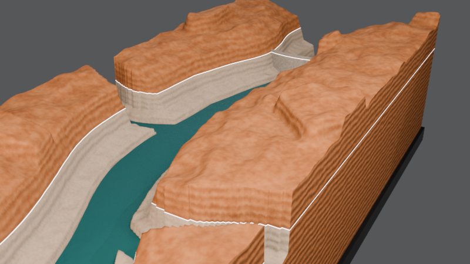
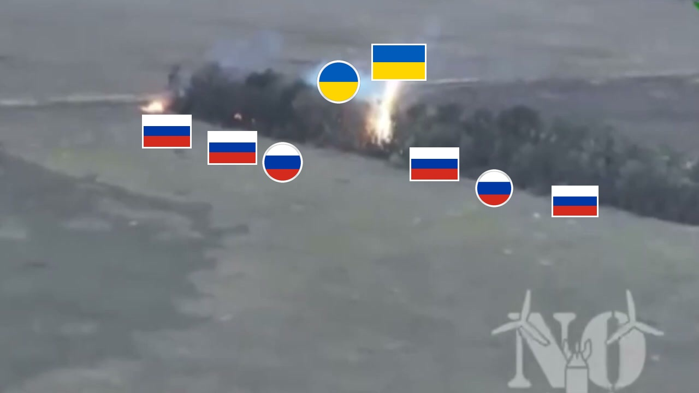
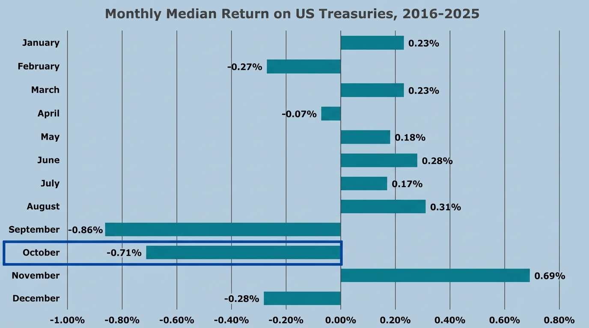
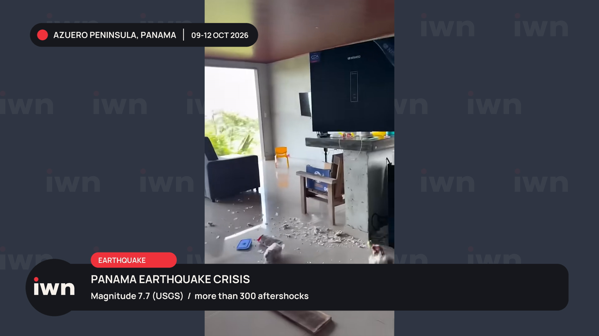

Turning Raw Footage into Viral Masterpieces & Cinematic Stories.
Hey, I'm Basil Shahzad. I craft high-retention short-form edits, James Jani-grade investigative documentaries, 3D motion graphics in Blender & Remotion, and cutting-edge AI-assisted video production workflows.
Short-Form Audience Retention Reel
Frame-perfect kinetic typography, rotoscoped subject depth & punchy sound design.
The Three Pillars in Action
Watch the exact three showcase edits demonstrating short-form retention psychology, 2D kinetic character motion, and long-form archival documentary storytelling. Hover or tap to play with sound!
Core Technique: Utilizes synchronized 3-color keyword highlight subtitles, rotoscoping the speaker to place kinetic typography in 3D depth, and pattern interrupt zooms every 2.4 seconds to eliminate drop-off.
Core Technique: Vector character rigging with exaggerated bezier curve motion, custom glow shading, bold type transitions, and hard sync to impactful sound cues for maximum punch.
Core Technique: Separates historical archival photography into foreground/background depth planes, projects through a 3D camera with atmospheric smoke & ember particles, styled with military timecode HUDs.
The 5 Pillars of Mastery
Every layer of modern video creation dissected: from viral hook retention to 3D GIS simulation, Remotion code animations, and developer-grade AI automated pipelines.
Video Editing & Audience Psychology
Great video editing is not just cutting clips—it is the engineering of human attention. Every cut, transition, and pause is calibrated according to viewer drop-off metrics and pattern interrupt theory.
The 3-Second Hook Architecture
Visual, sonic, and curiosity-driven hooks engineered to stop the scroll on TikTok, Reels, and YouTube Shorts.
Long-Form Story Pacing (James Jani & Vox Grade)
Multi-act narrative structuring for 15–60 minute deep dives, chapter transitions, retention resets, and tension curves.
Cinema-Grade Color Grading
DaVinci Resolve color pipeline, Kodak 2383 film stock emulation, balanced skin tones, and moody contrast control.
Motion Graphics & Kinetic Typography
Motion graphics that don't just look pretty—they drive narrative comprehension. From high-contrast editorial bold titles to seamless 2.5D camera maps, every pixel is animated with intention.
2.5D Archival Photo Parallax & Projection
Breathing cinematic life into vintage photographs with depth maps, foreground separation, camera fly-throughs, and particulate air smoke.
Kinetic Typography with Fluid Easing
Hand-tuned cubic beziers, bouncy springs, glowing edge highlights, and rhythmically synchronized letterform reveals.
Broadcast Lower Thirds & Tactical HUDs
Glassmorphic telemetry, military coordinates, document redactions, and news-grade breaking news ribbons.
3D CGI & Coded Motion Pipelines
Where technical precision meets artistic polish. Building 3D terrain cross-sections in Blender and programmatic, pixel-perfect financial data charts using Remotion (React / TypeScript).
3D GIS & Geological Bathymetry (The Hydraulic Record)
Accurate geological 3D cross-sections (e.g., Glen Canyon dam reservoir water-level depletion models) rendered in Blender.
Apple & Anthropic Grade Clean Data Motion
Minimalistic, ultra-refined typography, generous whitespace, and calm motion curves inspired by Claude product commercials.
Code-Driven Remotion Rendering
Interactive financial exhibits, yield curve movements, treasury return charts rendered programmatically with zero artifacts.

AI Video Creations & Generative Workflows
Leveraging artificial intelligence not to replace taste, but to superpower execution. Seamlessly integrating photorealistic avatars, generative B-roll, and ultra-natural speech synthesis into cohesive productions.
Photorealistic AI Avatars (HeyGen & Seedance)
Studio-lit AI presenter integration with flawless lip synchronization, micro-head gestures, and natural pacing.
Cinematic Generative B-Roll (Runway Gen-3, Midjourney & Luma)
Custom-prompted cinematic scenes when archival footage is unavailable, upscaled and graded to match live documentary stock.
Voice Synthesis & Automatic SRT Alignment
ElevenLabs voice cloning and custom audio mastering paired with OpenAI Whisper for millisecond-accurate word timing.
Custom Timeline Generation & Automation
What sets Basil apart from standard video editors: custom developer tooling. Using Python and pycapcut, I auto-assemble timelines from scripts and SRTs, eliminating 80% of repetitive assembly work.
Deterministic CapCut Draft Generation (build_draft.py)
Takes voiceover audio, auto-segments into scenes, and generates ready-to-polish NLE project files automatically.
Whisper SRT to Media Placement Engine
Matches script keywords to B-roll folders, auto-scales image aspect ratios, and fits chart timing to vocal pauses.
Batch GPU NVENC Rendering
High-speed hardware-accelerated video rendering pipelines with deterministic color space flags.
This proprietary automation allows rapid weekly turnarounds without compromising on bespoke artistic polish.
Featured Productions & Case Studies
A deeper look into long-form documentaries, 3D modeling, broadcast news packages, and financial animation suites.

Dragon Drones & Modern Warfare Tech
Comprehensive 18-minute master cut analyzing tactical drone warfare. Combines satellite map cartography, real-time tactical tracking overlays, combat footage color restoration, and intense audio mastering.
The Hydraulic Record: Glen Canyon 3D Elevation
Geological 3D visualization illustrating historical water depletion and bathymetric elevation drops across Glen Canyon Dam. Built from real USGS terrain data and rendered with realistic lighting in Blender.

Apple-Grade Financial & Treasury Data Motion
Programmatic motion graphics designed with Anthropic and Apple design bibles: generous negative space, refined typography, smooth spring curves, and deterministic chart animations for financial channels.

International Weather Network (IWN) Broadcast System
Full visual identity package for live news and natural disaster coverage. Features dynamic lower-third tickers, seismic magnitude telemetry, location badges, and multi-window live feed overlays.
The Production Blueprint
From raw script to viral publish. A deterministic, creative pipeline that ensures top-tier quality every single time.
Script & Hook Breakdown
Analyzing the script for pacing arcs, retention hooks, and emotional beats. Defining the visual motif, color palette, and pattern interrupt intervals.
Asset Synthesis & 3D Prep
Curating archival photography, generating 3D models in Blender, rendering Remotion charts, and synthesizing custom AI B-roll or avatars.
The Editorial Cut & Motion
Precise timeline assembly, kinetic typography synchronization, 2.5D camera parallax projection, rotoscoping, and seamless visual transitions.
Sound Design & Master Grade
Layered foley sound design (whooshes, impacts, textural atmospheric rumble), vocal equalization, and DaVinci cinema color grading for the final export.
The Creative & Technical Arsenal
Let's Make Your Next Video Unforgettable.
Whether you need viral short-form retention edits, a cinematic multi-part documentary series, or custom 3D and AI video automation—I'm ready to bring the vision to life.